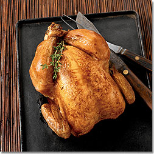

Ofnsteiktur kjúklingur

Steikur kjúklingur sem verður ekki þurr
Innihaldsefni
- 1 kjúklingur
- salt, pipar og eðal kjúklingakrydd
- 2-3 sítrónubátar
Skref
- Hitaðu ofn í 240˚C
- Hitaðu saltvatn í potti
- Settu kjúklinginn í pott og láttu sjóða í 5 mínútur
- Taktu kjúklinginn úr pottinum, þerraðu með eldhúspappír og penslaðu með olíu
- kryddaðu kjúklinginn með salti, pipar og kjúklingakryddi
- Stingdu sítrónubátunum inn í kjúklinginn og helltu 100ml vatn í formið
- settu formið í ofninn og steiktu kjúklinginn í 40-45 mínútur án þess að lækka hitann
- Taktu kjúklinginn út, breiddu álpappír yfir og láttu bíða á hlýjum stað í a.m.k. 15 mínútur áður en hann er borinn fram